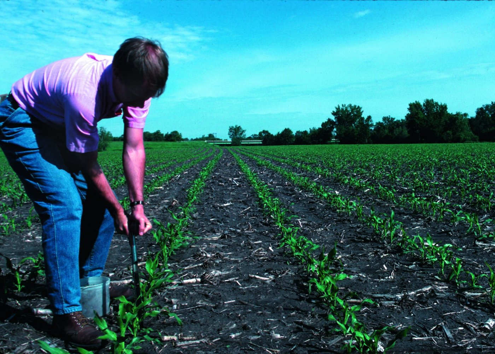
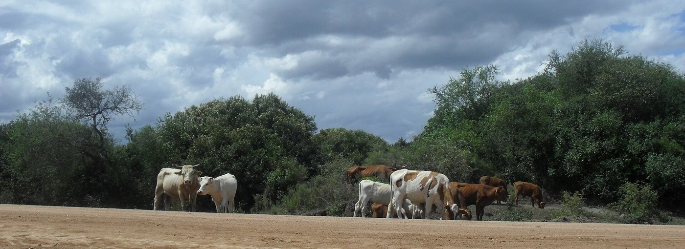
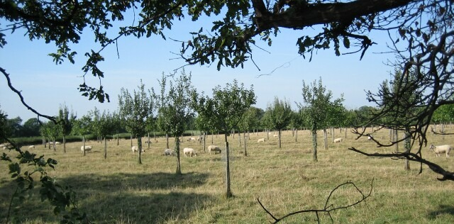
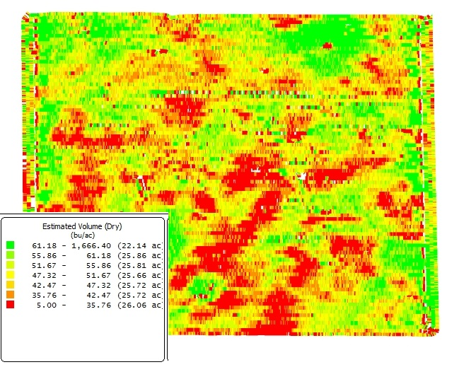
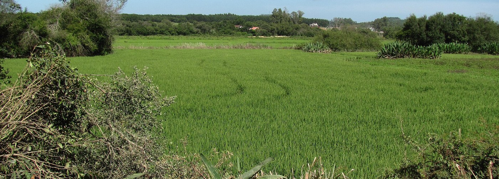
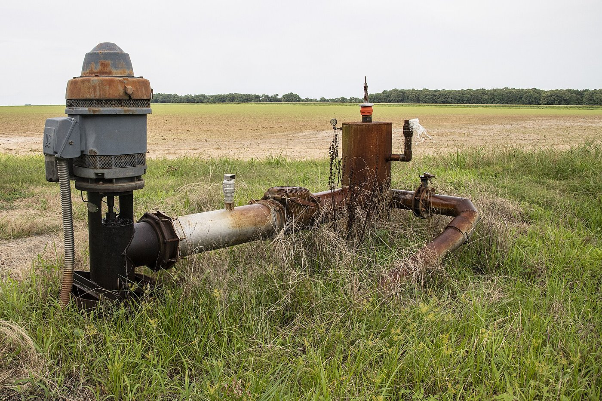

Do manejo técnico ao custo
Quanto custa produzir o que você declarou?
O manejo que o grupo descreveu no projeto consome insumo, máquina ou trabalho em cada prática, e tudo isso tem preço.
Manejo sem custo correspondente e custo sem manejo que o justifique são falhas do projeto.
A lógica que não muda
Todo projeto sério começa por um diagnóstico técnico: a leitura objetiva da realidade física que será trabalhada. É ele que transforma descrição qualitativa em números.
A natureza do diagnóstico muda conforme a atividade (laudo de solo, estrutura do rebanho, sistema de produção), mas a cadeia é sempre essa.
Coeficiente técnico: a ponte entre manejo e planilha
Coeficiente técnico é a quantidade de insumo ou serviço por unidade de produção: kg de ureia por hectare, ração por animal/dia, horas de trator por talhão.
O diagnóstico fornece o coeficiente; a pesquisa de preço (T2) fornece o preço. Um coeficiente estimado sem base erra o custo inteiro, por isso o diagnóstico vem primeiro.
Agricultura: o laudo de solo
Nenhuma lavoura séria começa sem análise de solo. O laudo é a origem dos maiores custos variáveis de qualquer cultura: calagem e adubação de base e cobertura.
- Lê-se o laudo, consulta-se o Manual CQFS-RS/SC (11ª ed., 2016), obtém-se a dose: calcário em t/ha, adubo em kg/ha.
- Em trigo de alta tecnologia (60 sc/ha esperadas), fertilizantes chegam a ~39% do custo de produção (CEPA/Epagri, safra 2026).
- A análise custa R$ 65 a R$ 150 por amostra, e é o primeiro item da planilha, porque fundamenta todos os outros.

Análise química e física do solo também é requisito do crédito rural (Parte IV.2).
Zootecnia: estrutura e evolução do rebanho
O equivalente ao laudo é responder: quantos animais de cada categoria existem, e como esse número evolui no tempo?
- A estrutura do rebanho define ração por animal/dia, vacinas por categoria, sal mineral por cabeça/mês, cada um, um coeficiente técnico.
- Vaca em lactação, vaca seca, novilha e terneira têm perfis de custo completamente diferentes.

Fruticultura: o sistema de produção
No pomar, o diagnóstico é a definição do sistema: decisões agronômicas de longo prazo que fixam os custos por 15 a 20 anos.
- O espaçamento define o número de mudas por hectare, o coeficiente central da implantação.
- Particularidade única: a fase de formação, 2 a 5 anos em que os custos ocorrem por inteiro e a receita é nula.

Implantação (investimento amortizável) não se confunde com custeio anual (COE recorrente).
O inventário do que a atividade consome
Antes de classificar, é preciso listar tudo. Um roteiro que evita esquecimentos:
- Insumos: sementes, fertilizantes, corretivos, defensivos, ração, medicamentos.
- Operações: preparo, plantio, tratos, colheita: combustível, manutenção, horas de máquina.
- Serviços e mão de obra: permanente, temporária, aviação, frete, secagem, assistência técnica.
- Estrutura: depreciação, arrendamento, impostos e taxas, seguros, energia.
Percorra o calendário da atividade mês a mês: o que acontece na lavoura ou no rebanho em cada momento, e o que cada evento consome.
Listar não basta: é preciso classificar
A classificação determina como cada custo se comporta quando a produção muda, e como tratá-lo em cada análise.
- Quem confunde variável com fixo erra o ponto de equilíbrio.
- Quem mistura direto com indireto distorce o resultado por atividade.
- Quem ignora os implícitos acha que lucrou mais do que lucrou.
Três critérios de classificação para o mesmo gasto, cada um responde a uma pergunta diferente. Metodologia: Matsunaga et al. (IEA), base do Campo Futuro/CNA.
Variáveis × fixos
Custos variáveis (CV)
Variam com a escala de produção: mais área, mais custo; menos área, menos custo.
- Sementes, fertilizantes, corretivos, defensivos
- Combustível das operações, mão de obra temporária
- Pecuária: ração, sal mineral, vacinas, vermífugos
Custos fixos (CF)
Existem independentemente do volume. Mesmo em ano sem safra, permanecem: remuneram a estrutura, não a produção.
- Depreciação de máquinas e benfeitorias
- Arrendamento fixo, pró-labore, mão de obra permanente
- ITR, seguro da propriedade
O teste do ano sem safra
Na dúvida, pergunte: se eu não plantar nada este ano, esse gasto continua existindo?
- Continua → fixo. O ITR vence e o funcionário mensalista recebe, com ou sem lavoura.
- Desaparece → variável. Sem plantio não há semente, adubo nem diesel de operação.
Segundo teste, equivalente: se eu dobrar a área, esse gasto dobra junto? Dobra → variável; não dobra → fixo.
Alguns itens resistem aos dois testes, energia da irrigação, por exemplo. Esse caso reaparece no exemplo do arroz.
Diretos × indiretos
Este par importa quando a propriedade tem mais de uma atividade: soja e milho, lavoura e pecuária.
- Diretos: atribuem-se a uma atividade específica: o adubo da lavoura de milho é custo direto do milho.
- Indiretos: compartilhados, exigem rateio: o salário do gerente que cuida de lavoura e pecuária divide-se por algum critério (horas dedicadas, área, nº de animais).
Explícitos × implícitos
A classificação que separa resultado financeiro de resultado econômico.
Explícitos
Desembolsos: aparecem no extrato bancário. Sementes, salários, diesel, frete.
Implícitos
Não saem do caixa, mas têm valor econômico real: depreciação, custo de oportunidade da terra própria, pró-labore não sacado.
Onde a classificação se encaixa
Os itens classificados serão somados em três camadas, a estrutura Matsunaga/IEA usada pelo Campo Futuro/CNA:
O trabalho desta aula é ter a lista completa e bem classificada. Sem ela, a soma seguinte erra, e a interpretação também.
Quando o coeficiente vira mapa
Na agricultura de precisão, o coeficiente técnico deixa de ser um número único por lavoura: a taxa variável aplica dose diferente em cada zona de manejo.
- O laudo de solo vira grade de amostragem, vários laudos georreferenciados.
- O custo do adubo passa a ser Σ (dose da zona × área da zona × preço), a mesma soma por zonas que fizemos com a receita na T2.

A pergunta econômica, a economia de insumo paga o custo da tecnologia, fica em aberto por ora.
Arroz irrigado na metade sul
O IRGA publica todo ano o custo médio ponderado do arroz irrigado gaúcho: média de Uruguaiana (Fronteira Oeste), Cachoeira do Sul, Pelotas, Bagé, São Lourenço do Sul e Santo Antônio da Patrulha.
- Safra 2025/26: sistema cultivo mínimo, publicação de junho de 2026.
- Produtividade média: 174,79 sc/ha (média das três safras anteriores).

É um orçamento completo e público, feito com a mesma lógica que o projeto de vocês: manejo típico → coeficientes → custos. A leitura a seguir aplica os critérios da aula.
Cada prática reaparece como custo
| Prática declarada | Itens que ela gera na planilha IRGA |
|---|---|
| Irrigação por inundação | diesel e energia das bombas, água, canais e condutos, taipas, aguador |
| Adubação conforme laudo | adubo de base e cobertura, ureia, aplicação |
| Controle fitossanitário | agroquímicos, aviação agrícola |
| Colheita mecanizada | combustível, manutenção, transportes internos, secagem, frete |
Teste reverso: se o projeto declara "controle de invasoras" e a planilha não tem herbicida nem aplicação, falta uma linha.
O custo do arroz, por camadas
Fonte: IRGA, Custo de Produção do Arroz Irrigado 2025/26 (junho 2026). Três em cada quatro reais são custo variável, o arroz é uma atividade intensiva em insumo e operação.
Energia da irrigação: fixa ou variável?
Na planilha IRGA, energia elétrica da irrigação (R$ 429/ha) está no custeio, variável. Mas a conta de luz do bombeamento tem duas partes:
- Consumo (kWh): varia com as horas de bombeamento: mais área ou mais levantes, mais consumo. Comportamento de variável.
- Demanda contratada: o valor pago pela potência disponível, que vence mesmo com as bombas desligadas. Comportamento de fixo.

R$ 90 de custo, e o preço?
A referência de preço usada na própria planilha: R$ 61,02/sc. O custo variável sozinho já dá R$ 67,40/sc, acima do preço.
- Foi por isso que orizicultores reduziram área na safra 2025/26.
- Como uma atividade sobrevive vendendo abaixo do custo total? A resposta exige as margens.
Em aula: conferir o indicador CEPEA do arroz em casca do dia e refazer a comparação.
Três lições do caso
- O manejo gera a lista: cada prática do arroz reapareceu como item de custo; nenhuma linha caiu do céu.
- A classificação revela a estrutura: saber que 74,7% é variável diz muito sobre o risco e a escala da atividade.
- Itens ambíguos existem: energia da irrigação: o critério declarado vale mais que o rótulo.
Tarefa de saída: parte 1
Descrevam o manejo como se explicassem a um técnico que vai executar: específico, quantificado, datado.
Tarefa de saída: parte 2
Rascunho vale, o refinamento e a soma vêm depois. O que não pode é faltar prática sem custo, a regra de ouro.
Checklist de saída
- Diagnóstico técnico identificado (laudo, rebanho ou sistema)
- Manejo descrito no passo 2, com coeficientes e calendário
- Lista de custos rascunhada no passo 3: cada prática com seu item
- Cada item classificado: variável ou fixo, direto ou indireto
Terminou antes? Confronte as duas listas: alguma prática sem custo? Algum custo sem prática?
T4: COE, COT e Custo Total
A lista está feita e classificada. Na próxima teórica ela vira orçamento em três camadas: COE, COT e CT, incluindo a depreciação linear e o custo de não remunerar a própria mão de obra.
- Revisar no site: Parte II, blocos II.1 (diagnóstico) e II.3 (classificação) + a autoavaliação do bloco.
- Trazer para a T4: a lista de custos do passo 3, a mais completa possível, e os valores de máquinas e benfeitorias da propriedade.
Fontes e créditos
Referência bibliográfica geral: KAY, Ronald D.; EDWARDS, William M.; DUFFY, Patricia A. Gestão de propriedades rurais. 7. ed. Porto Alegre: AMGH, 2014. E-book. ISBN 9788580553963. Disponível em: Minha Biblioteca. Acesso em: 29 maio 2026. Dados, preços e taxas citados nos exemplos: fontes indicadas em aula e atualizadas a cada oferta.
Material didático elaborado pelo Prof. Róberson Macedo de Oliveira, Colégio Politécnico da UFSM, com apoio de inteligência artificial (Claude, Anthropic) na organização didática e diagramação. O conteúdo pedagógico, a metodologia e as decisões de planejamento são de responsabilidade do docente.
Material de estudo: Parte II.1: Diagnóstico técnico · Parte II.3: Classificação dos custos · calculadora do rebanho · simulador de projetos · versão impressa deste material = apostila da aula (Ctrl+P).